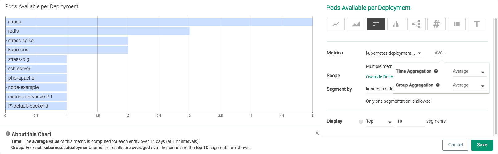
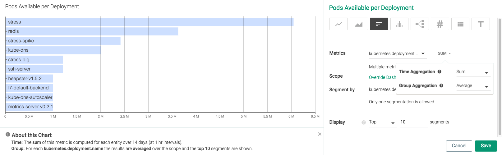
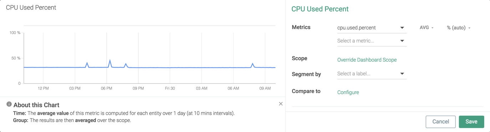
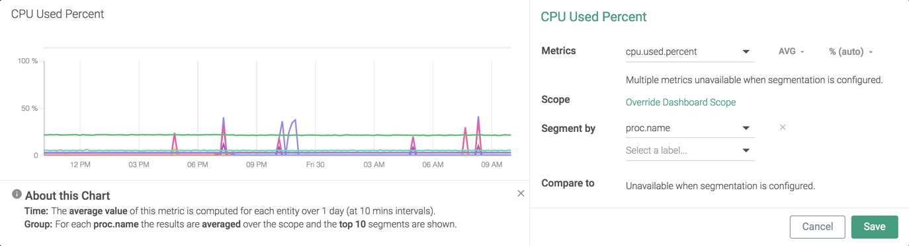
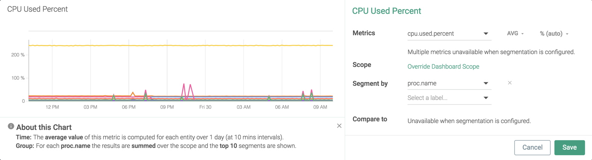
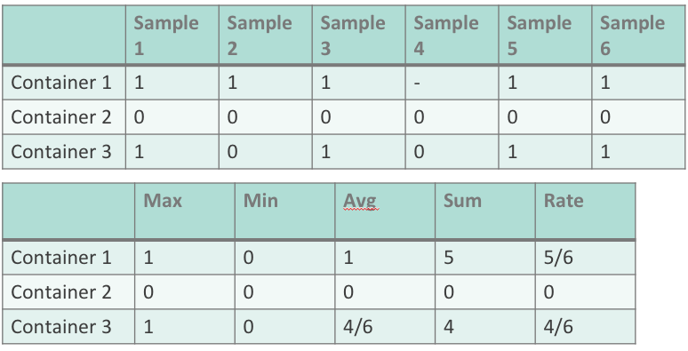
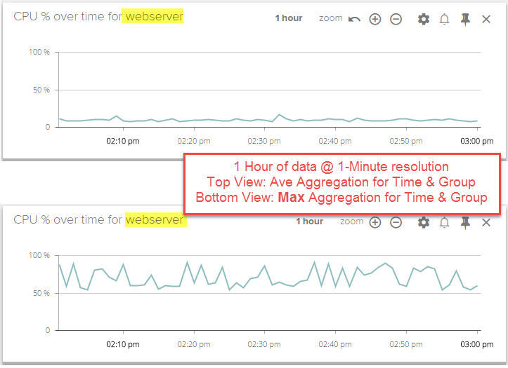

Data Aggregation
Sysdig Monitor allows users to adjust the aggregation settings when graphing or creating alerts for a metric, informing how Sysdig rolls up the available data samples in order to create the chart or evaluate the alert. There are two forms of aggregation used for metrics in Sysdig: time aggregation and group aggregation.
Note
Time aggregation is always performed before group aggregation.
Contents
Time Aggregation
Time aggregation comes into effect in two overlapping situations:
Charts can only render a limited number of data points. To look at a wide range of data, Sysdig Monitor may need to aggregate granular data into larger samples for visualization.
Sysdig Monitor rolls up historical data over time.
Note
Sysdig retains rollups based on each aggregation type, to allow users to choose which datapoints to utilize when evaluating older data.
By default, Sysdig agents collect and report metrics at a 10 second resolution. For time series charts covering five minutes or less, datapoints are drawn at this 10 second resolution, and any time aggregation selections will have no effect. When an amount of time greater than five minutes is displayed, data points are drawn as an aggregate for an appropriate time interval. For example, for a chart covering one hour, each datapoint would reflect a one minute interval.
At time intervals of one minute and above, charts can be configured to display different aggregates for the 10 second metrics used to calculate each datapoint.
Aggregation Type | Description |
|---|---|
average | The average of the retrieved metric values across the time period. |
rate | The average value of the metric across the time period evaluated. |
maximum | The highest value during the time period evaluated. |
minimum | The lowest value during the time period evaluated. |
sum | The combined sum of the metric across the time period evaluated. |
In the example images below, the kubernetes.deployment.replicas.available metrics first uses the average for time aggregation, and then uses the sum for time aggregation:
|  |
|  |
Note
Rate and average are very similar, and often provide the same result. However, the calculation of each is different. If time aggregation is set to one minute, the agent is supposed to retrieve six samples (one every 10 seconds). In some cases, samples may not be there, due to disconnections or other circumstances. For this example, four samples are available.
If this was the case, the average would be calculated by dividing by four, while the rate would be calculated by dividing by six.
Note
Most metrics are sampled once for each time interval, resulting in average and rate returning the same value. However, there will be a distinction for any metrics not reported at every time interval (for example, some custom statsd metrics).
Note
Rate is currently referred to as timeAvg in the Sysdig Monitor API and advanced alerting language.
Note
By default, average is used when displaying datapoints for a time interval.
Group Aggregation
Metrics applied to a group of items (for example, several containers, hosts, or nodes) are averaged between the members of the group by default. For example, three hosts report different CPU usage for one sample interval. The three values will be averaged, and reported on the chart as a single datapoint for that metric.
There are several different types of group aggregation:
Aggregation Type | Description |
|---|---|
average | The average value of the interval's samples. |
maximum | The maximum value of the interval's samples. |
minimum | The minimum value of the interval's samples. |
sum | The combined value of all of the interval's samples. |
Note
If a chart or alert is segmented, the group aggregation settings will be utilized for both aggregation across the whole group, and aggregation within each individual segmentation.
For example, the image below shows a chart for CPU% across the infrastructure:
|  |
When segmented by proc.name , the chart shows one CPU% line for each process:
|  |
Each line provides the average value for every process with the same name. To see the difference, change the group aggregation type to sum:
Note
The metric aggregation value showed beside the metric name is for the time aggregation. While the screenshot shows AVG, the group aggregation is set to SUM.
|  |
Aggregation Examples
The tables below provide an example of how each type of aggregation works. The first table provides the metric data, while the second displays the resulting value for each type of aggregation.
|  |
In the example below, the CPU% metric is applied to a group of servers called webserver. The first chart shows metrics using average aggregation for both time and group. The second chart shows the metrics using maximum aggregation for both time and group.
|  |
For each one minute interval, the second chart renders the highest CPU usage value found from the servers in the webserver group and from all of the samples reported during the one minute interval. This view can be useful when searching for transient spikes in metrics over long periods of time, that would otherwise be missed with average aggregation.
Note
The group aggregation type is dependent on the segmentation. For a view showing metrics for a group of items, the current group aggregation setting will revert to the default setting, if the Segment By selection is changed.